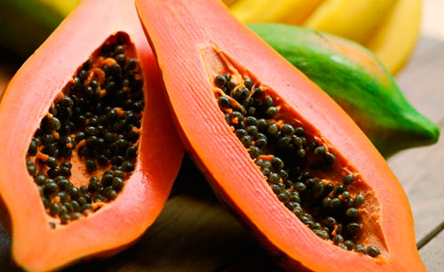

稻米
選用台南13號香米品種，富有芋頭香的白飯，粒粒美味！
芋頭

口感綿密，含有黏質，可促進肝解毒，鬆弛緊張的肌肉和血管。
番薯
降低血中膽固醇， 預防動脈硬化和糖尿病，吃得心安理得。
玉米
鮮甜可口，含有黃體素、玉米黃質可對抗眼睛老化。
南瓜
性溫，味甘無毒，營養豐富，有不可忽視的食療作用！
菱角
可替代穀類食物，有益腸胃，非常適合體質虛弱者、老人與成長中的孩子。
讓台灣人都吃的飽。以有機農法生產好米，滿足食米需求，穩定供應並擴張施作面積，產品皆具有機認證標章之高品質農產品，以自然農法生產，使各地農場都能讓在地人享有更自然的在地好食。
我們使用無農藥、無化學肥料的耕作方式，使用輪作、忌避植物耕種減少蟲害。有機是一種必需融入生活的理念，吃的健康、用的安心、活的快樂。
稻米
選用台南13號香米品種，富有芋頭香的白飯，粒粒美味！
芋頭
口感綿密，含有黏質，可促進肝解毒，鬆弛緊張的肌肉和血管。
番薯
降低血中膽固醇， 預防動脈硬化和糖尿病，吃得心安理得。
玉米
鮮甜可口，含有黃體素、玉米黃質可對抗眼睛老化。
南瓜
性溫，味甘無毒，營養豐富，有不可忽視的食療作用！
菱角
可替代穀類食物，有益腸胃，非常適合體質虛弱者、老人與成長中的孩子。
高麗菜

在高山高冷的氣候下生長，口感相當鮮脆清甜，富含風豐富的纖維素、維生素及礦物質。
白玉蘿蔔
體型較為細長，涼拌或醃漬時口感爽脆，熱炒煮湯的話則是紮實有彈性。
萵苣
含有指甲和毛髮生長所需營養的矽元素，對於肌膚有活化細胞組織功能。
甜椒
鮮甜可口，含有黃體素、玉米黃質可對抗眼睛老化。
草莓
豐富的維生素C，可以改善貧血和血管疾病的症狀，也有抗氧化的作用。
香蕉

膳食纖維可促進腸蠕動，使排便順暢。豐富的果寡糖，有助平衡腸細菌。
木瓜
大量維生素A和C、鈣、磷及纖維素，可以保護眼睛，有助於腸胃功能。
鳳梨
豐富的蛋白酵素可以促進組織復元，幫助治療瘀腫、扭傷。
芒果
含大量維生素A，因此具有防癌、抗癌的食療功效。